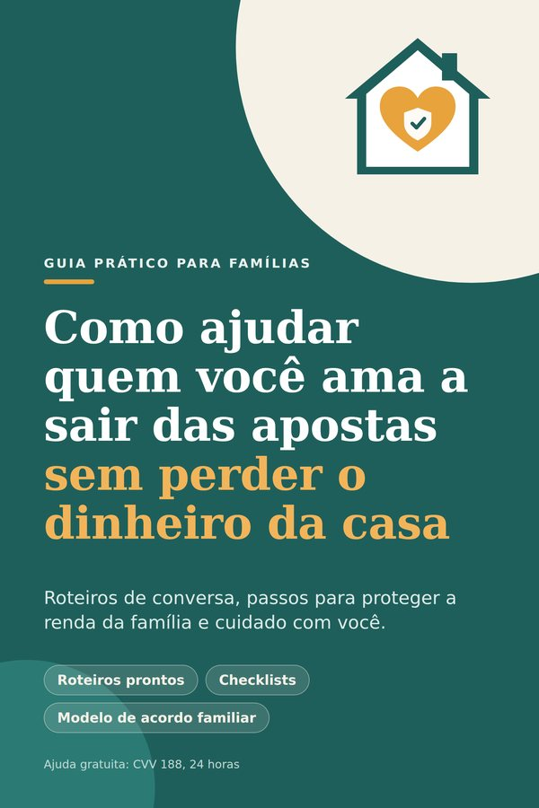

Um passo a passo para mães, pais e cônjuges conversarem sem brigar, protegerem as contas da casa e cuidarem de si mesmos, sem julgamento.

A proibição das bets não apagou os hábitos nem as dívidas, e muitos sites ilegais continuam no ar.
Não é um diagnóstico. É só para você enxergar o que está acontecendo.
Quando a conversa vira cobrança, a reação mais comum é negar, esconder e se defender. E você termina a noite sem dormir, com a casa no mesmo risco.
O guia organiza o que está ao seu alcance, em linguagem simples:
Mostramos só o começo. O resto você descobre lendo.
Existe um jeito de começar que desarma a defesa do outro e termina sem discussão.
A ordem importa mais do que você imagina. Um passo por dia, durante 7 dias.
Muita gente comete por amor, sem saber o efeito que isso tem.
Sinais discretos que quase ninguém percebe e como reagir sem invadir a privacidade.
Seu papel como responsável legal e como agir sem perder a confiança dele(a).
Limites, rede de apoio e um plano simples para não adoecer junto.
Um modelo pronto para preencher em conjunto: regras, quem cuida de quê e quando revisar. É o passo que transforma boa vontade em compromisso.
Cada semana de dúvida custa dinheiro, paz e saúde.
Você tem 7 dias para ler com calma. Se não fizer sentido para a sua realidade, peça o reembolso pela Hotmart, conforme o direito de arrependimento do Código de Defesa do Consumidor.
O guia foi feito para esse cenário. Ele não depende da decisão do outro: mostra como proteger o dinheiro da casa, como conversar sem brigar e como cuidar de você, aconteça o que acontecer.
A compra é feita pela Hotmart. Depois da confirmação do pagamento, você recebe o acesso ao PDF por e-mail e na área do comprador da Hotmart.
Sim. O conteúdo trata de conversa, proteção do dinheiro da casa e cuidado com a família, e vale com ou sem bets legalizadas.
Não. É um material informativo e prático. Ele indica serviços gratuitos e quando buscar ajuda profissional.
Não. O foco é proteger o seu dinheiro, combinar regras e conversar. Para filhos menores de idade, o guia trata da supervisão transparente e combinada.
Sim. Compras on-line têm direito de arrependimento de 7 dias, previsto no Código de Defesa do Consumidor, e a solicitação é feita pela Hotmart.